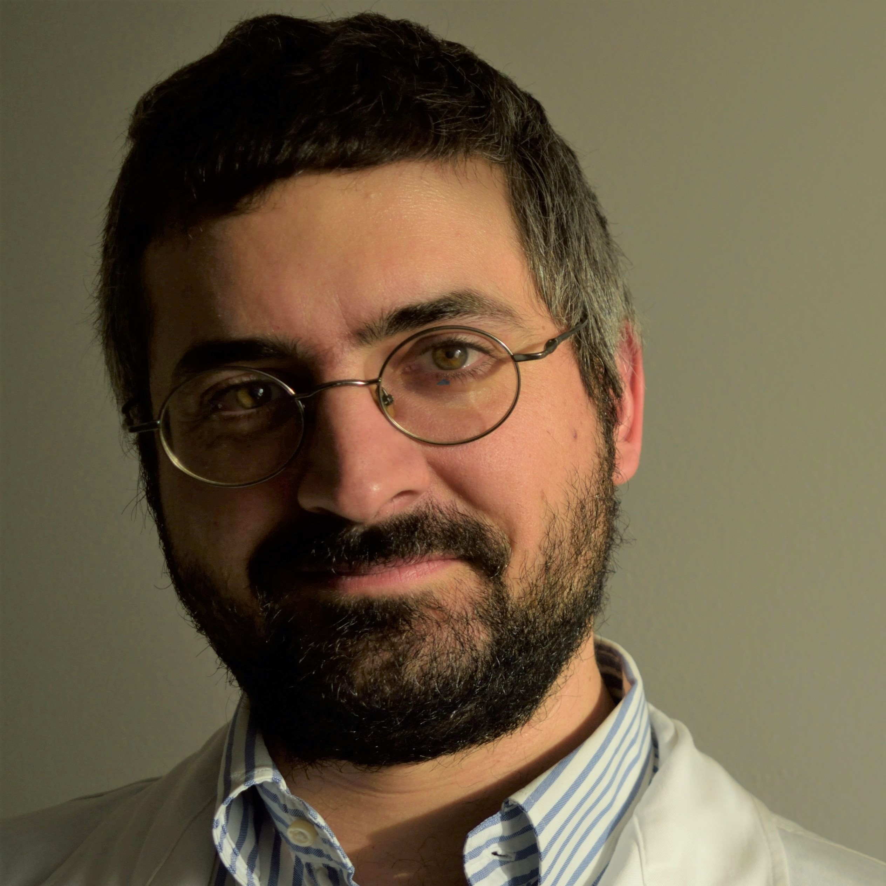
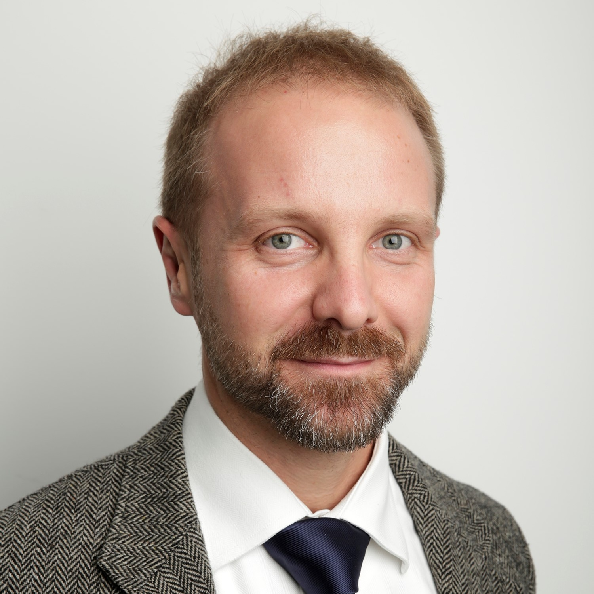
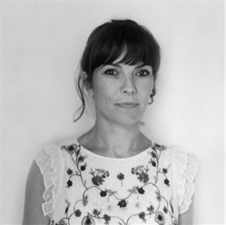
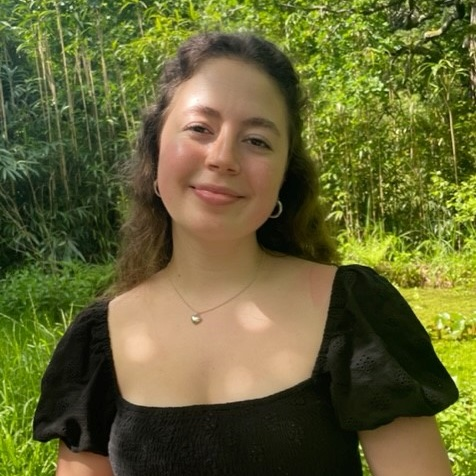
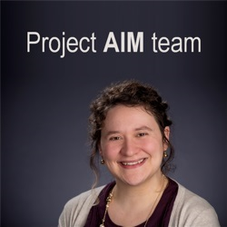

Members of our team
This section provides a brief description of the core members of the team as well as our collaborators!
Creators of EBIA-CT

Core members

Samuele Cortese, MD, PhD
University of Southampton, UK
Solent NHS Trust, UK
New York University, New York, USA
Read more

Marco Solmi, MD, PhD
University of Ottawa, Canada
University of Southampton, UK
King's College London, UK
Read more

Paolo Fusar-Poli, MD, PhD
King's College London, UK
South London and Maudsley NHS
Foundation Trust, UK
Read more

Joaquim Radua, MD, PhD
Hospital Clinic de Barcelona, Spain
King's College London, UK
Karolinska Institutet, Sweden
Read more
Graduate student working on this database

Laure Boisseleau, MSc
Université Paris Nanterre, FR
Baptiste C Mellier, MSc
Université Paris Nanterre
Undergraduate students that provided assistance

Lily Griffin, BSc
University of Southampton, UK
Grace Gair, BSc
University of Southampton, UK
Significant contributors to this database

Project Aim Team
University of Texas, US
Vanderbilt University, US
Boston & Mount Holyoke Colleges, US